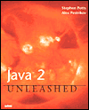

Ah well, all good things must come to an end... I accidentally reset
my hit counter, so I have gone from over 60,000 hits to 200 hits. Sigh
...
Tuesday Jul 06, 2004
We like to play boardgames at our house. With four kids, it is not to hard to find a quorom. Lately we've been playing the game Elfenland. In Elfenland, each player is an elf that must visit as many cities as possible, by figuring out the best route. Travel is by dragon, elf sled, unicorn and other such magical conveyance.
This game is essentially the travelling salesman problem where the travel costs are dynamic depending upon the terrain and the conveyance. It's a fun game, that we all enjoy (kids aged 9 through 15 and myself). Of course, I usually get beat (like last night, when I came in last).
Monday Jul 05, 2004
Interesting, short article about speech recognition research at IBM and BBN at Computerworld
There are tons and tons of Java books out there, but very few that talk about the Java Speech API. One book that does is Java 2 Unleashed, Sixth Edition. It has a whole chapter on using the Java Speech API (JSAPI). Furthermore, the chapter is available online.

Sunday Jul 04, 2004
According to this Sunday Herald article Michael Moore doesn't mind if you download his film, Farenheit 9/11. He says: "I think information, art and ideas should be shared". Me too.
Saturday Jul 03, 2004
Scott Weinstein points out this Overview of the Longhorn Speech API. It looks to be a nice clean API. As with JSAPI it looks like it is supporting the Speech Recognition Grammar Format as the way to define speech grammars. From what I've heard, the Longhorn speech API will be part of the core OS, so it will be possible to have speech apps work out-of-the-box on Longhorn. Perhaps we'll start to see more intesting speech apps on the desktop because of this.
Friday Jul 02, 2004
At Thursday's keynote, James Gosling and Simon Ritter demonstrated a speech recognizer called Sphinx. They were talking about Sphinx-4 a speech recognition system written entirely in Java.

Sphinx-4 is a state-of-the-art, open source, speech recognition system created via a joint collaboration between the Sphinx group at Carnegie Mellon University, Sun Microsystems Laboratories, Mitsubishi Electric Research Labs (MERL), and others.
Sphinx-4 performs well for a wide range of recognition tasks, from the very small to the very large. The following table compares the word-error-rate (WER) and runtime (RT) for Sphinx-4 and Sphinx 3.3 (CMUs 'fast' recognizer written in C). Lower numbers are better.
| Test | S3.3 WER | S4 WER | S3.3 RT | S4 RT(1) | S4 RT (2) | Vocabulary Size | Language Model |
|---|---|---|---|---|---|---|---|
| TI46 | 1.217 | 0.168 | 0.14 | .03 | .02 | 11 | isolated digits recognition |
| TIDIGITS | 0.661 | 0.549 | 0.16 | 0.07 | 0.05 | 11 | continuous digits |
| AN4 | 1.300 | 1.192 | 0.38 | 0.25 | 0.20 | 79 | trigram |
| RM1 | 2.746 | 2.739 | 0.50 | 0.50 | 0.40 | 1,000 | trigram |
| WSJ5K | 7.323 | 7.174 | 1.36 | 1.22 | 0.96 | 5,000 | trigram |
| HUB4 | 18.845 | 18.878 | 3.06 | ~4.4 | 3.8 | 60,000 | trigram |
Key:
- WER - Word error rate (%) (lower is better)
- RT - Real Time - Ratio of processing time to audio time - (lower is better)
- S3.3 RT - Results for a single or dual CPU configuration
- S4 RT(1) - Results on a single-CPU configuration
- S4 RT(2) - Results for a dual-CPU configuration
Sphinx-4 was recently released and is available at SourceForge
Thursday Jul 01, 2004
At today's JavaOne Keynote, James and Java Evangelist Simon Ritter gave a demo of a wearable computer that was using our all-Java speech engines: FreeTTS and Sphinx-4. Check it out at JavaOne keynotes. Simon showed some neat stuff with FreeTTS, Sphinx-4 and some image recognition software all running on a 500mhz laptop. The folks applauded when Simon mentioned that our speech engines run faster than their C counterparts. Thanks James and Simon!
Wednesday Jun 30, 2004
Micah mentioned a rather unusual project for his July 4th vacation. I must say that I am going undertake a more conventional (if a bit geeky) project and instead of building a flame thrower I thought for my summer vacation I would take a deep dive into something new and different.
I was inspired by Vicimus GEGAN an ambiant piece created with Python, cSound, sox and FreeTTS to learn more about digital sound synthesis and sound design. A bit of exploration led me to The Csound Book which just arrived from Amazon.com today. I'm so excited, I can't wait to dive in to this. This book is (according to the Amazon reviews) "is the most important book written in the last decade in the field of electronic music". Perhaps I'll post an mp3 or two down the road. Wendy ... Tomita ... Watch Out!
The highlight of Tuesday's JavaOne keynote was Scott McNealy asking "Where is the Outrage?". Where is the outrage over $300 billion (with a 'b') dollars in losses just in the first quarter, due to worms and Trojan viruses? Scott asked why there isn't more anger directed toward the source of the security flaws that allow such losses to occur. Scott reminded us that even though there are 100s of millions of JVMs deployed world-wide, there has never been a Java virus. Listen to the Scott McNealy Keynote or read a Summary at ZDNet .
Tuesday Jun 29, 2004
In the JavaOne technical session yesterday, Graham Hamilton mentioned that one of his favorite new features of Java 1.5 is the return of printf. Here! Here! As a long time C programmer I have always found that trying to output nicely formatted columns of numbers from Java to be awkward, requiring DecimalFormat objects, and manual padding of strings. A very unsatisfying experience. Now with the revival of printf, all of those old C skills for controlling output are useful again. Woot!
Monday Jun 28, 2004
Here's a nifty example of using the Java Speech API to control a lego mindstorm robot:
Lejos Speech control example
The JSGF speech grammar is pretty simple:
grammar rover; public= forwards {forwards} | backwards {backwards} | back {backwards} | reverse {backwards} | stop {stop} | left {left} | right {right} | up {up} | down {down} | whoa {stop} | halt {stop} | spin {left} | go {forwards}; public = Good bye {bye} | So long {bye} | Shut down {bye};
Friday Jun 25, 2004
The folks over at McGill University have created an Automated Door Attendent, a multi-modal virtual secretary. Using the attendant, visitors may leave video messages, schedule appointments, or review web-based documents and demos. The purpose of the door attendant is to study the possibilities and limitations of artificial agents deployed in roles typically assigned to humans.
The Automated Door Attendant uses Sphinx-4 for speech recognition. They've written a paper Automated Door Attendant : Speech Integration that describes the process of developing and integrating speech into their system. Here's a quote:
The most attractive aspect of the Sphinx Speech Recognition System was it's high flexibility and modifiability in terms of it's front-end. Furthermore, in order to accomplish the tasks required of the speech side of ADA, modifications and customizations could be made without affecting the underlying architecture of the decoder.
I am quite impressed that these folks were able to select a speech recognition system, figure out how it works and integrate it into their large application, all in less than a month.
Thursday Jun 24, 2004
Vasanth Dharmaraj describes how he added speech synthesis support to his database monitor by adding four Lines of FreeTTS code. Pretty cool indeed!
Phil did a really cool thing this week. He gave Sphinx-4
(the speech recognizer written in Java) the ability to detect
out-of-grammar utterances. Up until now, Sphinx-4 would always attempt
to match what was said to the active grammar, no matter what. For
instance, if the active grammar contained only the digits zero through
nine, but the speaker said 'sphinx-4', the recognizer would probably
return "six four". The application would have no way of determining if
this is really what the person said.
This is clearly a problem for many applications. It is important for an application to detect when someone has said something unexpected, something out-of-grammar. So Phil dug in, did some research to learn the best way to deal with out-of-grammar utterances and has implemented a solution that detects out-of-grammar utterances over 90% of the time without unduly affecting accuracy and speed.
Phil documented everything on the RejectionHandling page of the Sphinx-4 Twiki including a great set of references to research on the topic.
This blog copyright 2010 by plamere